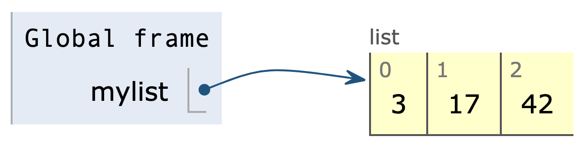

How list is stored
mylist = [3, 17, 42]
Simplified:
How nested list is stored
nested_list = [[3, 17, 42], [10, 20, 30]]
zeros = [0] * 5C = [zeros] * 3C[1][3] = 100print(C)
zeros = [0] * 5C = []for i in range(3):C.append(zeros)C[1][3] = 100print(C)
Output
[[0, 0, 0, 100, 0], [0, 0, 0, 100, 0], [0, 0, 0, 100, 0]]
C = []for i in range(3):C.append([0] * 5)C[1][3] = 100print(C)
Nested list comprehensions
1matrix = [[10, 20, 30],2 [40, 50, 60],3 [70, 80, 90]]45squared = [[x ** 2 for x in row] for row in matrix]67print(squared)8# [[100, 400, 900],9# [1600, 2500, 3600],10# [4900, 6400, 8100]]
Time for list comprehension problems on Ed Lessons.
How to work with a file in Python
A file is a sequence of characters or bytes stored on a storage device such as a hard drive.
- Open the file using the built-in function open()
- Read data from the file or write data into the file
- Close the file
Opening a file with open()
Built-in function open(filename, mode):
- filename (str): name of the file to read (if the file is in the current directory) or full path to the file.
- mode (str): 'r' for reading, 'w' for writing, 'a' for appending. If this argument is omitted, it defaults to 'r'
- Returns: a file object which allows reading from/writing to the file.
1filename = "quotes.txt"2fobj = open(filename, "r") # mode "r" for reading
Reading a file with read() method of file object
File objects have a method read(size) that takes one optional argument:
- size: the number of characters to read from the file
- If omitted, the entire file will be read.
- Returns: a string containing the characters in the file
Closing a file with close() method of file object
- close() method takes no argument and returns nothing. It closes the file associated with the file object
For the following example, download the files from Ed Lessons and keep them in the same directory as the python program.
1filename = "quotes.txt"2fobj = open(filename, "r") # mode "r" for reading34file_content = fobj.read() # read whole file as a string5print(file_content) # print the string67fobj.close() # close the file
Why close a file?
Closing the file is important for many reasons
- Operating System (e.g Windows, Mac OS) may lock the file until it is closed (Other programs may not use the file as long as it is open)
- Too many open files may cause your program/computer to slow down
Reading a file line by line
- The file object returned by open() is an iterable that can produce a sequence of lines in the file. So we can use it in a for loop.
- Each line will have a trailing newline ("\n") character.
1filename = "quotes.txt"2fobj = open(filename, "r")34for line in fobj: # file object is iterable5 line = line.rstrip("\n") # Remove trailing "\n" character6 print(line)78fobj.close()
Reading a file as list of lines
1filename = "quotes.txt"2fobj = open(filename, "r")34# Read whole file, split into lines and return a list of lines5all_lines = fobj.readlines()67# Each line will have a trailing newline character "\n"89print(all_lines)1011fobj.close()
Writing text to a file in Python
To write to a file in Python:
- Open the file with open() using mode 'w' for “write.”
- If the file does not exist, it will be created.
- If the file exists, it will be deleted and replaced with an empty file.
- Call write(s) method on the file object to write the string s into the file.
- Close the file.
1filename = "grades.txt"2fobj = open(filename, "w") # mode "w" for writing34fobj.write("Name,A1,A2,A3\n") # write line to file5fobj.write("Reza,90,80,100\n") # write another line6fobj.write("Dev,100,90,100\n") # write another line78fobj.close()
Appending text to a file in Python
Appending means adding text to the end of a file without changing/deleting text already present in the file.
- Open the file with open() using mode 'a' for “append.”
- If the file does not exist, it will be created.
- If the file exists, it is NOT deleted.
- Call write(s) method on the file object, to write the string s at the end of the file.
- Close the file.
1filename = "grades.txt"2fobj = open(filename, "a") # mode "a" for appending34fobj.write("Khalid,85,90,97\n")5fobj.write("Alice,95,90,97\n")67fobj.close()
Time for some problems on Ed Lessons.